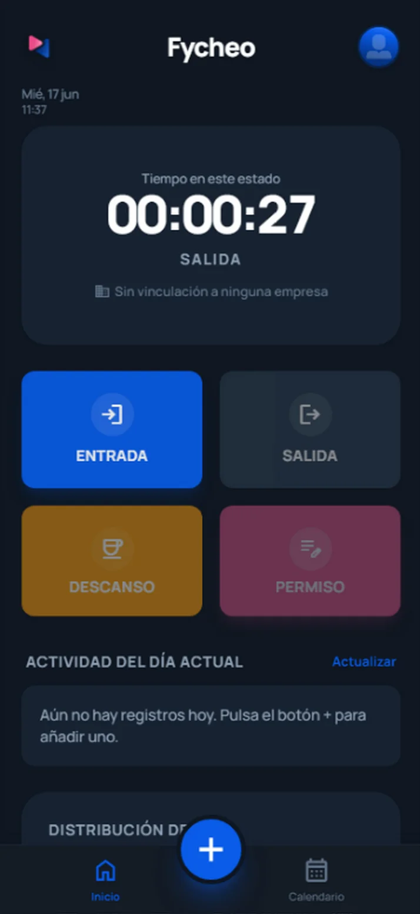
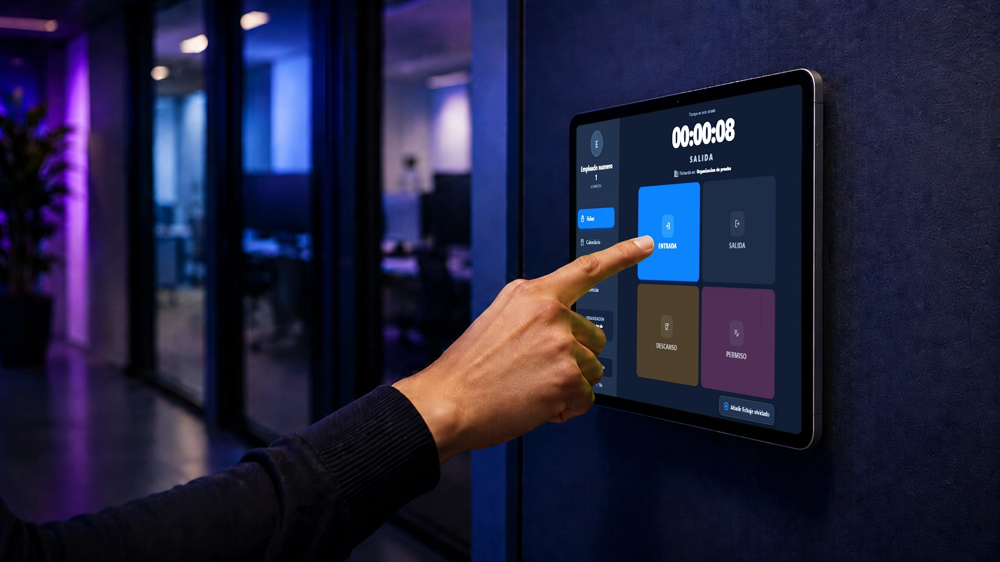
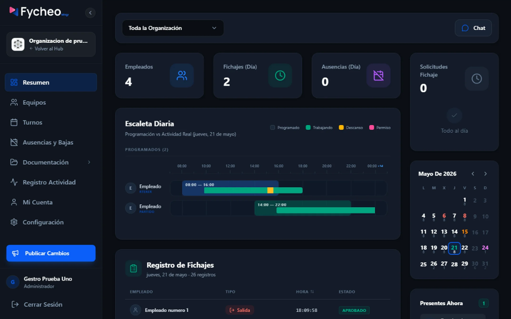
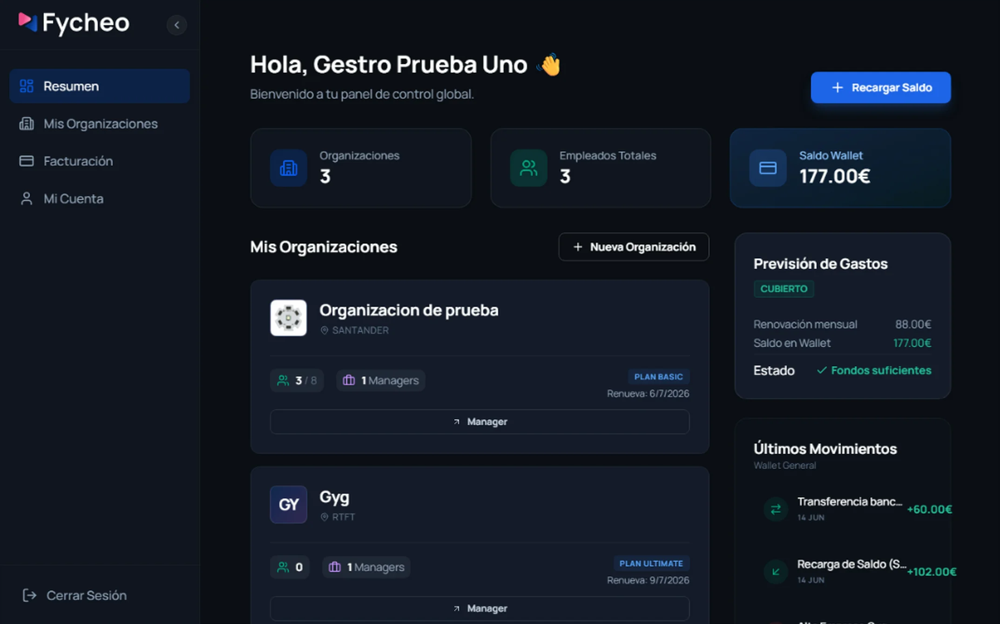
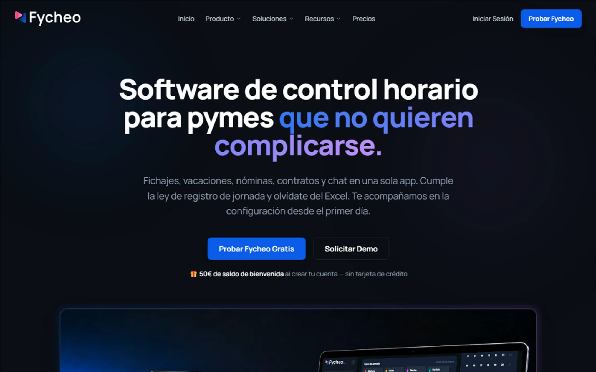

EL PRODUCTO
En España las empresas están obligadas a registrar la jornada de cada empleado y a conservar esos registros cuatro años. Muchas pymes lo resuelven con papel o con un Excel que nadie revisa. Fycheo lo convierte en un gesto: el empleado ficha en dos toques desde su móvil o con su DNI en la tablet de la entrada, y quien gestiona ve la plantilla en tiempo real, planifica turnos, aprueba ausencias, reparte nóminas y exporta los informes. Lo he concebido, diseñado y programado yo solo, de la marca a los cobros.
INFRAESTRUCTURA TÉCNICA
- FRONT-END: React 19 y TypeScript con Vite y Tailwind CSS 4 en el panel y el kiosko; React 18 en la web y el panel maestro.
- MÓVIL: Expo y React Native: un shell nativo que carga la app web y le añade GPS, push, archivos e inicio de sesión con Google.
- BACKEND: Supabase: Postgres con RLS, Realtime, funciones SQL para la lógica crítica, Edge Functions en Deno y tareas con pg_cron.
- PAGOS: Stripe con PaymentIntents, SetupIntents para recargas recurrentes y webhook firmado.
01 / EL FICHAJE
Un registro que no se duplica ni se pierde
Fichar parece trivial hasta que el mismo empleado lo hace desde el móvil y la tablet a la vez, o pulsa dos veces porque la red va lenta. Por eso el fichaje no se inserta desde la interfaz: pasa por una función de Postgres que lo valida todo en una sola operación.
- Sin carreras:
insert_time_entry_validatedbloquea la fila del empleado para que las peticiones de varios dispositivos se procesen de una en una. - Sin dobles: rechaza un fichaje del mismo tipo hecho menos de 10 segundos después del anterior.
- Con ubicación: desde el móvil guarda la latitud y la longitud del fichaje, para que la empresa sepa desde dónde se registró.

// Pantalla: la jornada en curso y los botones de fichar.
02 / EL KIOSKO
Una tablet en la puerta para quien no ficha con el móvil
En un almacén o una tienda no todo el mundo quiere usar su teléfono personal. El kiosko convierte una tablet en un reloj de fichar para toda la plantilla: el empleado escribe su DNI o NIE, ve su jornada y ficha.
- Una por empresa: cada empresa vincula un único dispositivo; si se activa otra tablet, la anterior queda desvinculada sola.
- Más que fichar: desde el propio kiosko el empleado puede consultar su calendario y pedir vacaciones o ausencias.
- Ligado al cobro: antes de cada fichaje,
can_user_clock_incomprueba que la empresa tenga saldo.

// El kiosko en una tablet fija en la entrada.
03 / EL PANEL DE GESTIÓN
Recursos humanos en una pantalla
Quien gestiona ve quién está trabajando ahora mismo, planifica el cuadrante de turnos y solo lo publica cuando está listo, aprueba ausencias, marca los festivos de la empresa y guarda la documentación de cada empleado.
- Nóminas en bloque: se suben todos los PDF del mes a la vez; el panel lee el DNI del nombre de cada archivo y lo asigna a su empleado.
- Informes: registros de jornada en PDF con
jspdf, listos para una inspección de trabajo. - Alta masiva: importación de la plantilla desde un CSV con
papaparse.

// Pantalla: resumen del día y registro de fichajes.
04 / MODELO DE NEGOCIO
Un monedero en vez de una suscripción
Las pymes desconfían de los cargos automáticos. En Fycheo la empresa recarga un saldo cuando quiere y el plan se descuenta de ahí al empezar cada periodo. Si el saldo no llega, los empleados siguen entrando en la app, pero no pueden fichar hasta que se recarga.
- Incentivos: 50 € de bienvenida, una sola vez por CIF, y un 2 % extra por cada 100 € recargados, hasta un 10 %.
- Tarificación automática: si la plantilla crece o mengua, el plan Pro sube o baja de tramo y cobra solo los días que quedan del periodo.
- Sin cobros dobles: el webhook de Stripe confirma cada recarga y una restricción única en la base de datos impide registrar dos veces el mismo pago.

// Pantalla: saldo, previsión del próximo cargo y últimos movimientos.
05 / APPS NATIVAS
Una sola app web, dos apps de tienda
Mantener la misma app tres veces (web, iOS y Android) no es viable para una sola persona. Las apps de Fycheo son un shell de Expo que carga la app web y le presta lo que el navegador no tiene. Las dos partes hablan por un protocolo de mensajes versionado y documentado.
Toda la interfaz y la lógica, la misma que en el navegador.
Mensajes tipados: sesión, ubicación, avisos y descargas.
Carga la web en una WebView e inyecta las respuestas.
expo-location y expo-notifications.
Informes al menú de compartir e inicio de sesión con AuthSession.
06 / LO QUE NO SE VE
Seguridad y fiabilidad en la base de datos
Con datos de empleados y dinero de por medio, las reglas no pueden vivir solo en la interfaz. Las importantes están en Postgres, y se comprueban.
- RLS probada: un archivo de pruebas ejecuta las consultas como un usuario autenticado real para comprobar que nadie ve datos que no son suyos.
- Avisos que llegan: si una notificación push falla, entra en una cola que pg_cron reintenta hasta tres veces.
- Límites de uso: control de frecuencia en las Edge Functions con una tabla propia en Postgres, sin depender de Redis.
- Equipo: chat entre compañeros en tiempo real con Supabase Realtime y consejos de jornada generados con Gemini.

// Pantalla: la web pública con el registro gratuito.
07 / ARQUITECTURA
Cómo encajan las piezas
- 7aplicaciones
- 71scripts SQL
- 16Edge Functions
- 1protocolo de mensajes versionado
- Europe/Madridzona horaria en la base de datos
Clientesquién usa qué
Apps de tiendaExpo y React Native
Supabaseuna sola base de datos
ServiciosEdge Functions en Deno
// Decisiones técnicas y por qué
stripe_payment_intent_id: el segundo intento falla en la base de datos y el saldo no se duplica.pending y necesitan aprobación; los automáticos, como approved.rate_limits y una función RPC en el propio Postgres.08 / EN EL CÓDIGO
Fragmentos reales del repositorio
La máquina de estados del fichaje
Antes de insertar, la función busca el último fichaje del empleado y deduce en qué estado está: fuera, trabajando, en descanso o en una salida justificada. Solo deja pasar las transiciones válidas, y cada error lleva un mensaje que el empleado entiende.
-- 2. Anti-duplicados a nivel de base de datos (mismo tipo en < 10 segundos)
IF NOT p_is_manual THEN
SELECT EXISTS (
SELECT 1 FROM public.time_entries
WHERE user_id = p_user_id
AND LOWER(entry_type) = LOWER(p_entry_type)
AND occurred_at >= p_occurred_at - INTERVAL '10 seconds'
AND occurred_at <= p_occurred_at + INTERVAL '10 seconds'
) INTO v_duplicate;
IF v_duplicate THEN
RAISE EXCEPTION 'Espera unos segundos: ya registraste esta acción.';
END IF;
END IF;
-- 5. Validar reglas de la máquina de estados
IF LOWER(p_entry_type) = 'clock-in' AND v_mode NOT IN ('out', 'break', 'others') THEN
RAISE EXCEPTION 'Ya estás en jornada. Registra una salida antes de volver a entrar.';
END IF;
IF LOWER(p_entry_type) = 'clock-out' AND v_mode != 'working' THEN
IF v_mode = 'break' THEN
RAISE EXCEPTION 'No puedes salir mientras estás en descanso. Registra primero Fin descanso.';
…
v_status := CASE WHEN p_is_manual THEN 'pending' ELSE 'approved' END;Nóminas repartidas por DNI
Quien gestiona suelta todos los PDF del mes de una vez. El panel busca un DNI o NIE en el nombre de cada archivo, lo cruza con la plantilla y enseña qué archivos tienen dueño y cuáles no antes de subir nada.
const extractDni = (filename: string) => {
const match = filename.match(/\b(\d{8}[A-Za-z])\b/i);
return match ? match[1].toUpperCase() : null;
};
const dni = extractDni(file.name);
const employee = dni
? employees.find((e) =>
e.dni_nie?.replace(/\s/g, '').toUpperCase() === dni)
: undefined;
return { file, detectedDni: dni, employee, status: 'pending' };RESUMEN DEL IMPACTO
Fycheo es el proyecto más grande que he construido: siete aplicaciones que comparten una base de datos, con las reglas críticas (fichajes, permisos y cobros) dentro de Postgres para que ninguna interfaz pueda saltárselas. Reúne lo que hace falta para vender software a empresas: cumplimiento legal, roles, pagos, avisos, apps en tienda y un modelo de precios pensado para su cliente.